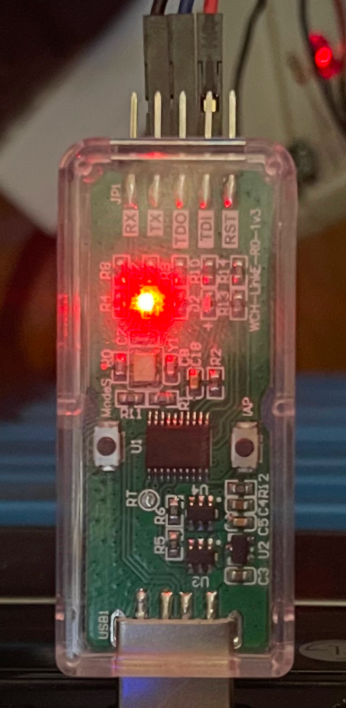
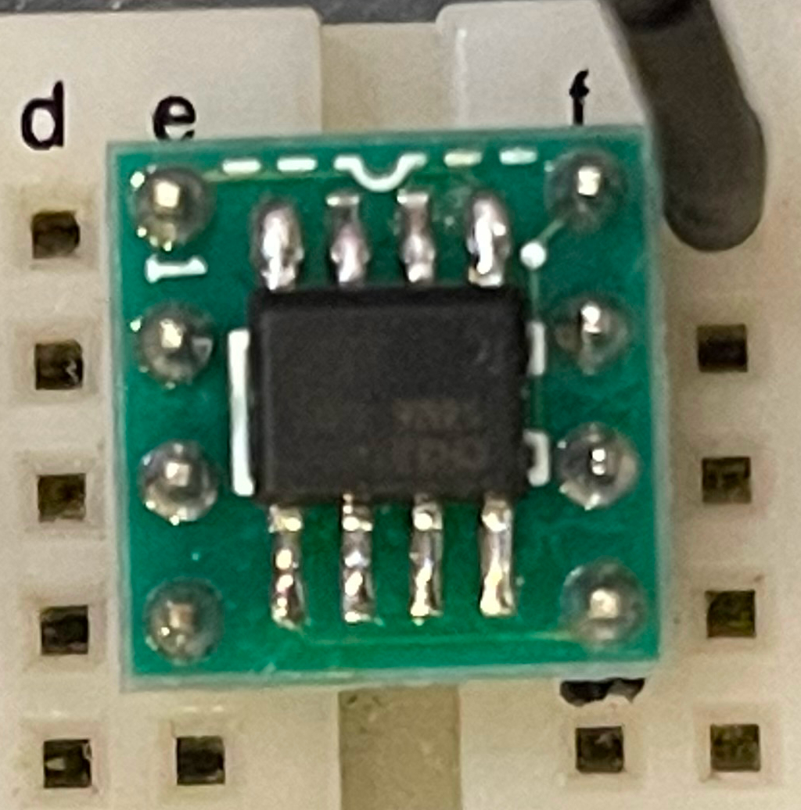

CH32V003でLチカ
秋月電子さんで、CH32V003J4M6の扱いが始まったので試してみた。スペックを見て良いなと思ったのは、
- 安価(40円!)
- ローエンドだけど高いスペック(32bitコア、クロック48MHz、ROM 16KB、RAM 2KB)。ADC/UART/I2C付き
- 電源の範囲が広いl(2.7V - 5.5V)
プログラマ
プログラマには同じく秋月で取り扱っているWCH-LinkEエミュレーターを使用。
プログラマのモード変更
このプログラマはRISC-VシリーズとARMの両方に対応しているらしく、まずRISC-Vのモードに切り替えないといけないようだ。購入した直後だと、赤と青のLED両方が点灯しているが、RISC-Vモードに切り替えるとこの写真のように赤のLEDのみが点灯するようになる。

このモード切り替えはプログラムで行う方法とスイッチで行う方法があるらしい。この写真でもModeSと書かれたスイッチが見える。しかし筐体に穴などなく、このスイッチはどうやって押すんだろう？ まぁドリルで穴をあけちゃってもいいが、プログラムでも行えるようなので今回はそちらに挑戦。
検索するとWindows用のユーティリティが提供されているようで、それを紹介しているものが多い。うちはWindowsマシンもあるがメインじゃないので出すのが億劫だし、こういうユーティリティのEXEを実行するというのもセキュリティ的に気持悪い。今回はUbuntuでできないか調べてみた。
こちらにあるモード切り替えプログラムを使えば、Pythonでモード切り替えできるようだ。
まずpyusbをインストールする。
$ pip install pyusb
このモード切り替えプログラムはrootで動かす必要があるみたいなので、ちょっと面倒な手順を踏む。まずpyusbがインストールされた場所を確認する。
$ python3
>>> import usb
>>> usb.__path__
['/home/shanai/.local/lib/python3.10/site-packages/usb']
これがモジュールの場所なので、これをPYTHONPATHで指定する。
$ sudo -s
# PYTHONPATH=/home/shanai/.local/lib/python3.10/site-packages python3 /path/to/rvmode.py
うまくモードが変われば赤LEDのみが点灯するようになる。
接続
CH32V003J4M6はSOPパッケージなので、変換基板も入手。これでブレッドボードが使えるようになる。

WCH-LinkEとの結線はこんな感じ。電源以外の信号線がたった1本で済むのは楽だ。

Lチカプログラム
実際のLチカプログラムだが、これまた検索するとArduino IDEを使う例が多いようだ。これも良いのだが、もう少し素朴な開発環境は無いかと探したところch32v003funというのを見つけたので、今回はこれを使うことにする。
プログラムの準備
ch32v003funを使うにあたってのインストール方法を参照して必要な手順を実行する。
$ sudo apt-get install build-essential libnewlib-dev gcc-riscv64-unknown-elf libusb-1.0-0-dev libudev-dev
$ sudo cp minichlink/99-minichlink.rules /etc/udev/rules.d/
$ sudo udevadm control --reload-rules && sudo udevadm trigger
これは最初に1回だけ実行しておけば良い。
書き込みと実行
examples/blinkの下にLチカプログラムがあるので、あとは以下を実行するだけ。
$ git clone https://github.com/cnlohr/ch32v003fun
$ cd examples/blink
$ make
ビルドとチップの書き込みまで全てやってくれる。
最後に
そういえば数年前(もっと前かな)にLPC1114が出た時も衝撃を受けたが、当時は100円台だった価格も知らない間に4倍近くになってしまった。8PINのLPC812は当時100円を切っていたと記憶しているが、今では入手が困難になってしまった。今回のRISC-Vシリーズも数年後どうなるかは分からないが、現段階では抜群のコストパフォーマンスと言えそうだ。
思えばこの手のデバイス(インサーキットでプログラミングできるホビー向け高速マイクロコントローラ)はPICシリーズが最初だったと思う。PICKitというプログラマが5,000円くらいだったがそれでも当時は破格の値段で驚いたものだ。それがとうとうプログラマが1,000円を切ってしまい、32bitコアで40円という時代に突入してしまった。またCH32シリーズはRustの移植も行われているようで、今後は安全なRustでローエンドのプログラムも開発できるようになりそうだ。